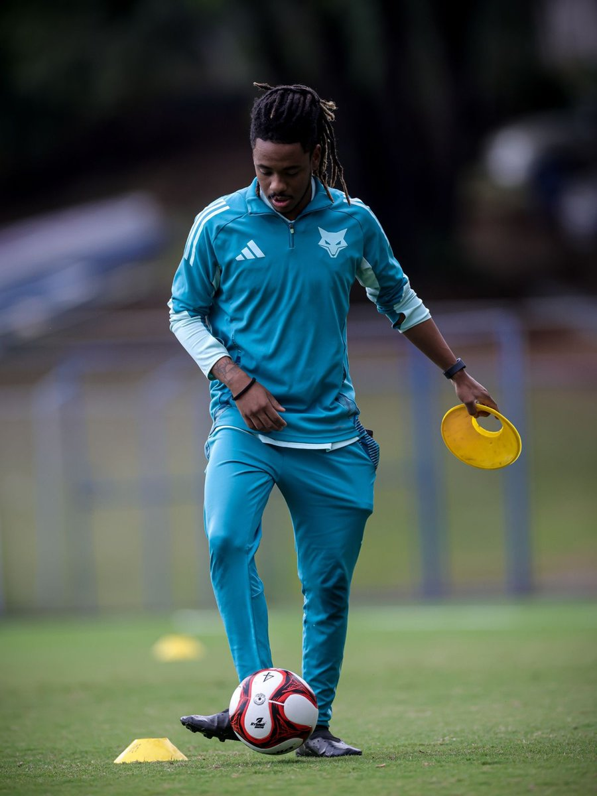

Login do treinador

Nosso protocolo entende o sistema de formação e treinamento esportivo a partir de três estruturas: o que ensinar? (conteúdos a serem desenvolvidos), como ensinar? (tipos de tarefa de treino) e como avaliar? (medidas de avaliação do treino). Escolha um tópico abaixo pra ver os detalhes.
Todo conteúdo trabalhado num treino pertence a um destes cinco tipos, do mais geral ao mais específico. Clique em "Ver catálogo" pra ver os conteúdos de cada tipo:
Noções básicas para tomada de decisão comum a esportes coletivos de invasão.
Combinação das habilidades motoras fundamentais aplicadas ao contexto esportivo — a transição entre o treino da coordenação e o treino da técnica.
| Organizar ângulos | Geral |
| Regular força | Geral |
| Manejo de bola | Geral |
| Determinar momento do passe | Geral |
| Reconhecer voo da bola | Geral |
| Antecipar a posição do adversário | Geral |
| Mudança de direção | Geral |
Resposta motora de uma decisão para solucionar problemas do jogo na escala individual.
| Ofensiva | |
| Domínio orientado | Ofensiva |
| Passe de apoio | Ofensiva |
| Passe de ruptura | Ofensiva |
| Cruzamento de canal | Ofensiva |
| Cruzamento de quina | Ofensiva |
| Cruzamento de retorno | Ofensiva |
| Condução | Ofensiva |
| Fixação com bola | Ofensiva |
| Drible (1x1 ofensivo) | Ofensiva |
| Proteção de bola (pivô) | Ofensiva |
| Finalização média/longa | Ofensiva |
| Finalização curta | Ofensiva |
| Finalização de 1ª | Ofensiva |
| Cabeceio | Ofensiva |
| Desmarque de apoio | Ofensiva |
| Desmarque de ruptura | Ofensiva |
| Ajuste corporal | Ofensiva |
| Escaneamento | Ofensiva |
| Ganho de intervalo | Ofensiva |
| Defensiva | |
| Abordagem | Defensiva |
| Cobertura | Defensiva |
| Pressão | Defensiva |
| Recomposição | Defensiva |
| Equilíbrio defensivo | Defensiva |
| Temporização | Defensiva |
| Bloqueio (frontal e lateral) | Defensiva |
| Rebatida | Defensiva |
| Defesa de tabela | Defensiva |
| Perseguição | Defensiva |
| Ajuste corporal defensivo | Defensiva |
Ações técnico-táticas que dependem da interação de pequenos grupos de atletas para sua correta aplicação.
| Ofensiva | |
| Tabela | Ofensiva |
| Dinâmica de 3º homem | Ofensiva |
| Ruptura | Ofensiva |
| Ultrapassagem | Ofensiva |
| Troca de posição | Ofensiva |
| Defensiva | |
| Troca de marcação | Defensiva |
| Fechar janela (setorial) | Defensiva |
| Controle de profundidade (por setor) | Defensiva |
Ações técnico-táticas que dependem da interação de todos os atletas da equipe para sua correta aplicação.
| Ofensiva | |
| Troca de corredor | Ofensiva |
| Atacar marcando | Ofensiva |
| Jogo por fora do bloco | Ofensiva |
| Jogo por dentro do bloco | Ofensiva |
| Jogo nas costas do bloco | Ofensiva |
| Ataque rápido | Ofensiva |
| Ataque posicional | Ofensiva |
| Contra-ataque | Ofensiva |
| Ampliar o espaço efetivo de jogo | Ofensiva |
| Retirar da zona de pressão | Ofensiva |
| Defensiva | |
| Proteção do corredor lateral | Defensiva |
| Controle de profundidade (intersetores) | Defensiva |
| Defender em bloco | Defensiva |
| Proteção do corredor central | Defensiva |
| Compactação | Defensiva |
| Redução do espaço efetivo de jogo | Defensiva |
Dentro de uma mesma tarefa de treino, um conteúdo pode ter três papéis diferentes — todos intencionais, nenhum "secundário" no sentido de menos importante:
O principal conteúdo objetivado por determinada tarefa de treino em determinada sessão.
Conteúdo trabalhado, porém não é a principal ênfase daquela tarefa naquela sessão.
Conteúdo correspondente à fase oposta do conteúdo principal daquela tarefa de treino.
Toda tarefa de treino se encaixa numa escala — do mais fechado e sem oposição até o jogo formal completo. Quanto mais à direita, mais "parecido com o jogo real" (representatividade):
Ambientes de aprendizagem representativos são tarefas de treino que apresentam parâmetros, em sua execução, que refletem o ambiente competitivo. Nesse sentido, tarefas mais representativas geram maior retenção e transferência do que foi aprendido para o jogo. Assim, o treinador pode manipular tarefas que tenham maior ou menor representatividade para enfatizar determinado comportamento.
Tarefa fechada, sem oposição e sem bola em contexto decisório. Repetição de um padrão motor isolado, com baixa fidelidade de ação e referências funcionais ausentes/nulas.
Tarefa fechada, sem oposição, mas com alta fidelidade de ação (distância, ângulo, trajetória e zona reais do campo). Refino fino de um gesto já estabelecido; funcionalidade ainda nula.
Primeiro degrau do continuum de jogo: oposição mínima ou passiva (manequim, defensor estático). Introduz decisão real contra oposição mantendo o problema tático simples.
Jogos reduzidos com oposição presente, porém em configuração desproporcional ao jogo formal. Contexto informacional presente, mas distorcido; foco em princípios gerais de jogo.
Oposição presente com recorte de uma subfase específica do jogo. Informação funcional focal, mantendo oposição real sobre o problema tático-alvo.
Oposição presente e proporcional ao jogo formal. Máxima especificidade ao modelo de jogo sem abrir mão da proporcionalidade estrutural.
Oposição completa e fidelidade total. Reproduz integralmente a configuração do jogo.
Os números do dashboard vêm de uma cadeia de cálculo simples, pensada pra medir não só quanto tempo o treino durou, mas quanto dele foi aprendizagem de verdade pra cada atleta:
Tempo destinado para a sessão (geralmente 90 minutos no Cruzeiro).
Tempo do treino excluindo partes inativas (hidratação, transições, feedbacks).
Tempo de prática de cada atleta: o tempo efetivo ponderado pelo número de atletas ativamente envolvidos.
Somatório do TAA de todas as tarefas da sessão.
Aspectos que o treinador deve observar na execução dos atletas para entender se a tarefa está cumprindo sua função pedagógica — o critério qualitativo por trás da nota de desempenho de cada bloco de treino.